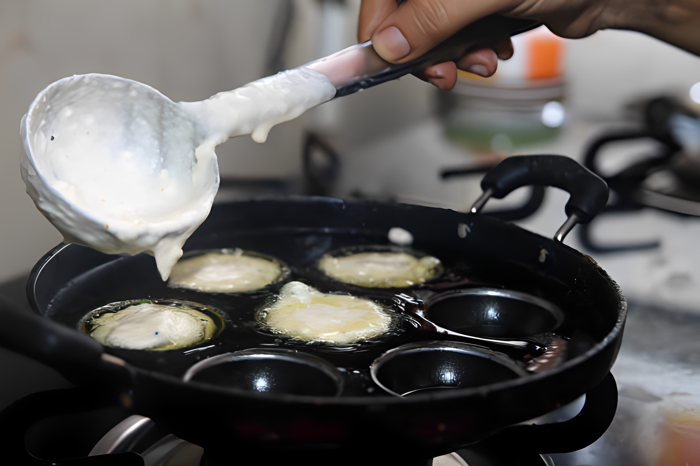
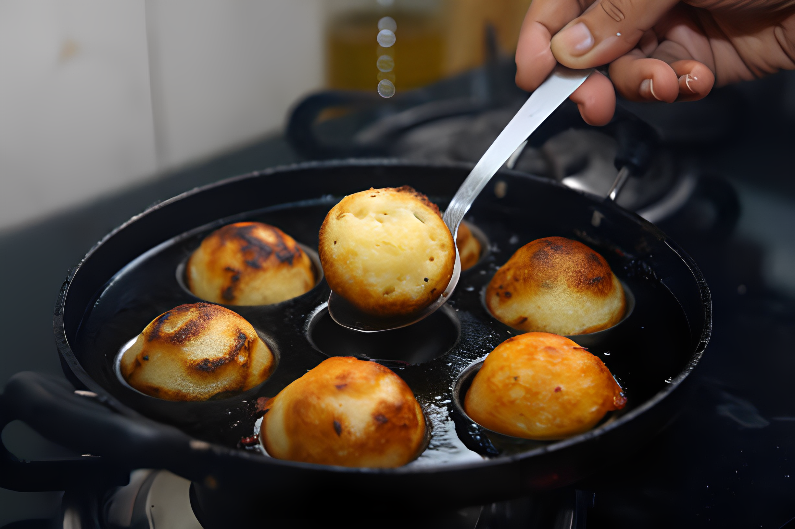

Sweet Paniyaram is a delightful South Indian dish, often made during festivals or as a special treat.
Ingredient
1 cup of raw rice
1/4 cup of urad dal (black gram)
1/2 cup of jaggery (grated)
1/4 teaspoon of cardamom powder
A pinch of baking soda
A pinch of salt
2 tablespoons of grated coconut (optional)
Ghee or oil for frying

Instructions
Soak the raw rice and urad dal separately for about 4-6 hours.
Grind the soaked rice and urad dal together to form a smooth batter. The consistency should be similar
to a pancake batter.
In a bowl, add the grated jaggery and a little water. Heat it on low flame until the jaggery dissolves
completely. Strain the syrup to remove impurities.
Mix the jaggery syrup into the batter and stir well.
Add cardamom powder, baking soda, a pinch of salt, and grated coconut (if using) to the batter. Mix
everything thoroughly.
Heat the paniyaram pan and add a few drops of ghee or oil in each mold.
Pour the batter into each mold, filling them up to 3/4th capacity.
Cook on medium heat. Once the edges start turning golden brown, flip the paniyaram using a skewer or
spoon to cook the other side.
Ensure both sides are evenly cooked and have a nice golden color.
Remove the sweet paniyaram from the pan and repeat the process with the remaining batter.
Serve the sweet paniyaram warm and enjoy the deliciousness!

These sweet paniyarams are a perfect blend of flavors and textures, with the sweetness of jaggery and
the aroma of cardamom😋.